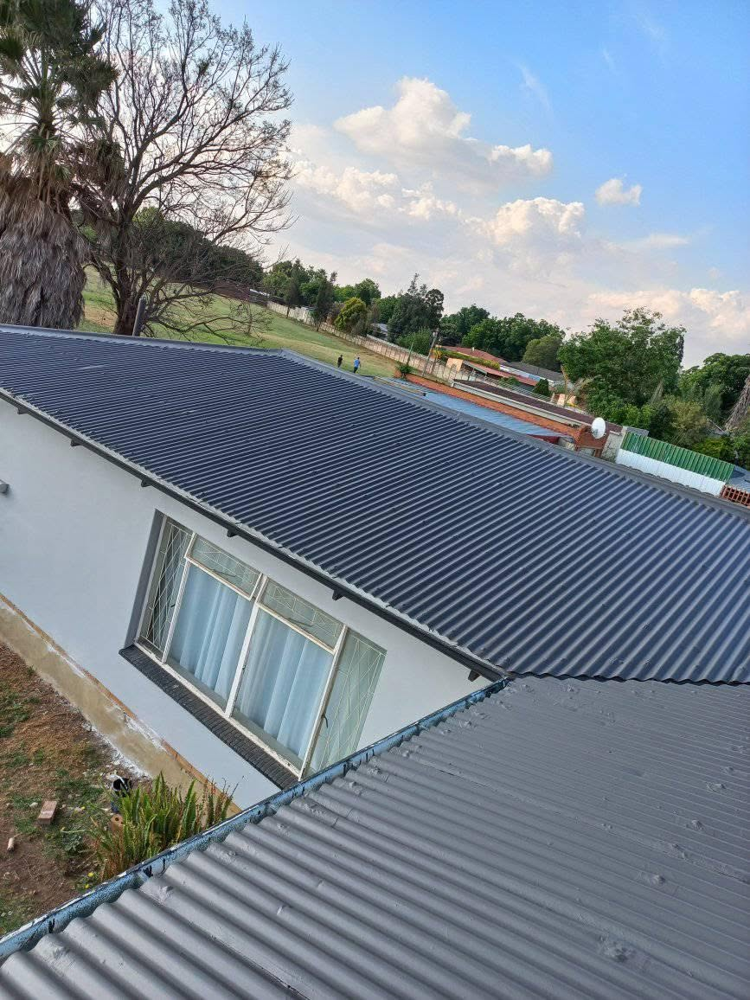
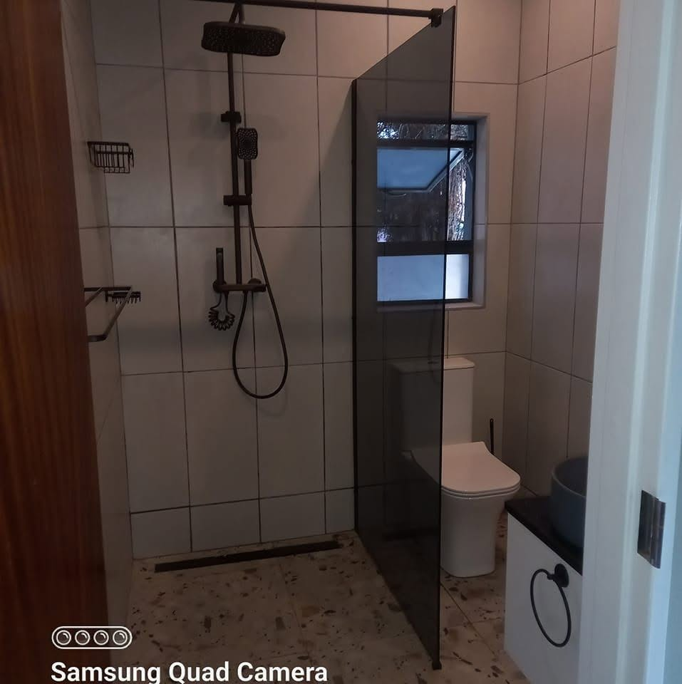
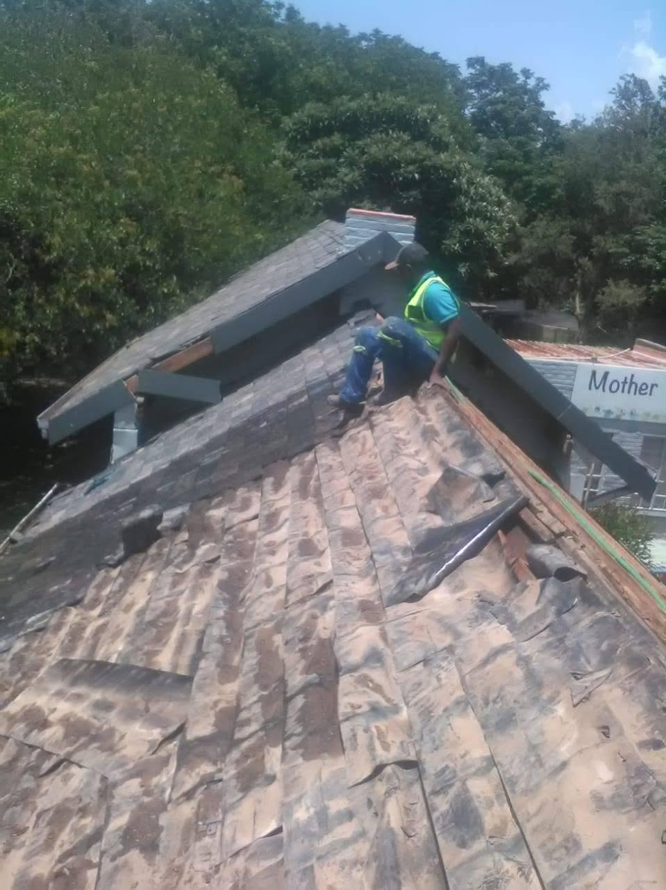
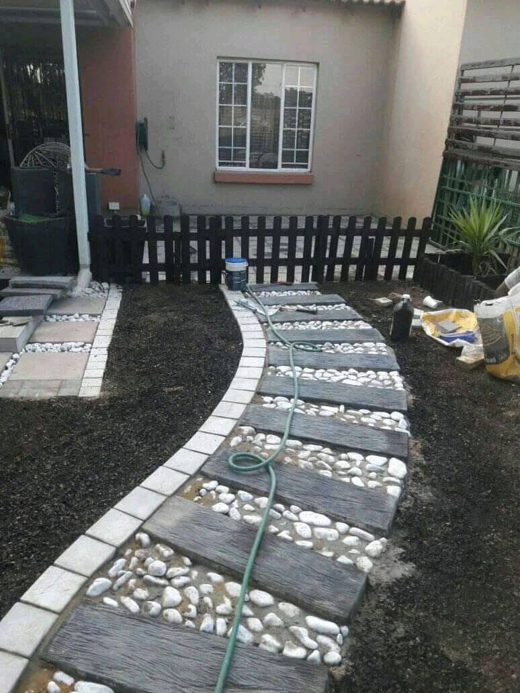

We know how daunting managing and overseeing your project can be, but we're here to make the process smooth and easy. Desentral Projects & Civil Works has been serving as a leading construction company since our inception in 2015. We're a team of fully-certified professionals who tackle everything from complex projects to simpler operations, and we go the extra mile to make sure clients are completely satisfied with our work.
Distribution boards, wiring and general electrical work.
Tile replacement, repairs and re-roofing.
Roof and wall painting, damp proofing.
Floor and wall tiling, full bathroom revamps.
Walkways, driveways and hardscaping.
Parking bay and road line marking.
Full room and structural renovations.
Controlled demolition work.